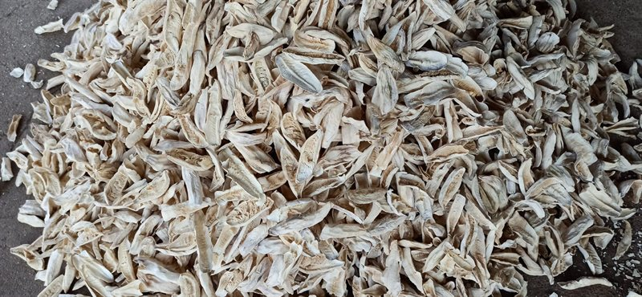
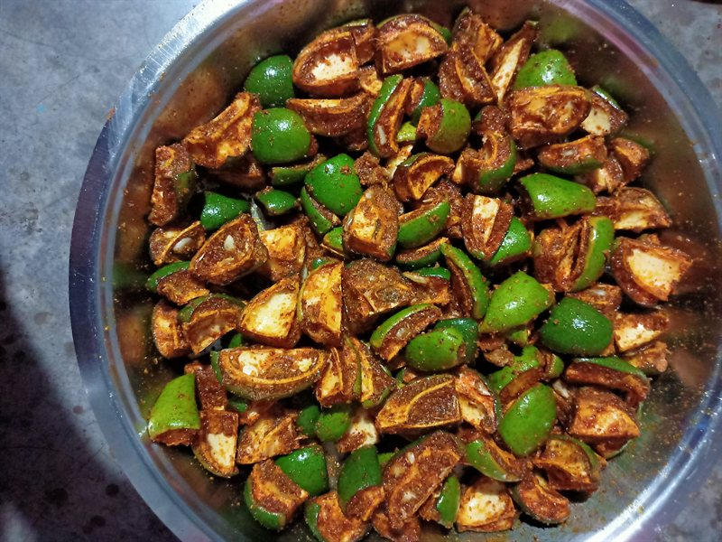

When summer arrives across northern and central India, the fragrance of pungent cold-pressed mustard oil, cracked fenugreek, and tart green mangoes fills ancestral courtyards. For over three millennia, the subcontinent understood something modern food corporations frequently forget: the finest preservative on Earth is patient, unhurried sunshine.
Why Electrical Dehydrators Ruin Authentic Achar
Many industrial pickle factories rush mangoes through hot-air blowers to strip moisture in 90 minutes. But rapid heat breaks down the cellular pectin inside raw mango flesh, turning the pieces mushy within weeks.
When mangoes are salted with crushed Sendha Namak and spread upon pristine muslin cloths under open sunlight, the moisture evaporates gradually. As water leaves, the mango absorbs rock salt through slow osmotic pressure, retaining an audible, firm crispness that survives two whole years submerged in oil.


The Alchemy of Wooden-Churned Kachi Ghani Oil
The oil in a traditional pickle jar is not merely a lubricant—it is a liquid airtight seal. By completely submerging every piece of mango below cold-pressed mustard oil, airborne mold spores and wild fungi cannot access oxygen. Furthermore, cold-pressed mustard oil contains allyl isothiocyanate, a potent natural antimicrobial compound that inhibits spoilage bacteria while nurturing gut-friendly lactobacillus strains.
"A true martaban of achar must never be hurried. When you hear the lid tied with twine whistle softly under the afternoon sun, you know the earthen pot is breathing life into the spices."
Porcelain Barnis: The Forgotten Thermodynamic Vessel
In our kitchen at Dadi's Swad, metal ladles and plastic containers are strictly prohibited around curing vats. Glazed porcelain martabans insulate the fermenting fruit from sharp nighttime drops in temperature while gently diffusing daytime solar heat.
Next time you twist open a jar of our Traditional Mango Pickle, observe the bright red oil ring, inhale the roasted fenugreek aroma, and savor that unmistakable crunch. You aren't just tasting food—you are experiencing four decades of ancestral patience.